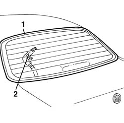

7035B18 Windscreen GLASS - Eliminate water penetration
- Path
- Procedures > 70 FITTINGS > 7035 BODYSHELL WINDOWS > 7035B rear window > 7035B18 Windscreen GLASS - Eliminate water penetration
- Kind
- repair procedure (removal / refitting; the operation number is the code)
- Applies to
- all engines; all production periods
- Interactive page
- https://sloeber94.github.io/elrnDB-a156/en/#/3238781
Applies to: all engines; all production periods
Near the localisation of the infiltartion remove one of the interior covering components of the rear window edge
1. Moisten with soaped water the external part of the infiltration .
2. Blow from the interior compressed air and identify the infiltration point

Applies to: all engines; all production periods
If the infiltration point is small, seal from the interior the involved part and wait until the seal is dried and repete the test
If the infiltration point is bigger 7035B10 Rearscreen (bonded type) WINDOW GLASS - R.R. - Includes. cleaning edges of glass and housing in bodyshell
Install the removed components